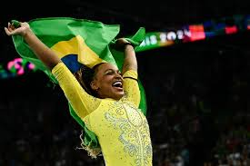

Saúde mental
O bem estar mental dos atletas olímpicos entrou em pauta na última Olimpíada de Tóquio, em 2021, quando a ginasta americana Simone Biles saiu da competição por problemas de saúde mental. A tal questão não era tão comentada como é hoje em dia, porém após a saída da ginasta muitas pessoas começaram a se perguntar como muitos dos atletas olímpicos lidam com a pressão, treinos, desempenho ou como ficam ao perder em uma modalidade ou ao ganhar as medalhas, seja elas ouro, prata ou bronze.
A saúde mental dos atletas é extremamente importante para as performances em suas modalidades, com isso o Comitê Olímpico Brasileiro (COB) investiu em uma equipe de psicólogos à disposição dos atletas. As técnicas usadas pelos psicólogos ajudam os esportistas a focar no aqui e no agora, no presente, fazendo com que eles se concentrem 100% em suas provas para atingir seus principais objetivos.
Além disso, a idade também é um fator importante. Nas Olimpíadas de 2024 muitos dos atletas eram bem jovens, como exemplo a atleta chinesa Zheng Haohao de 11 anos de idade. A idade pode interferir na performance dos esportistas, por serem muito novos tem medo do julgamento alheio, tanto os espectadores quanto as pessoas que as auxiliam nesse meio como empresários, família, amigos podem afetá - los , além de que é colocada uma pressão maior em cima deles, para obterem melhores resultados que seus colegas de atletismo mais velhos que eles.
Sendo assim, a saúde mental dos esportistas deve ser bem gerenciada para uma melhor performance, a pressão que a sociedade coloca em cima dos atletas deve ser dissolvida e torcer para eles mesmo que não apresentem o resultado esperado, percam em alguma modalidade. E também, principalmente, mediar as cobranças aos atletas mais jovens, que ainda estão com o cérebro em desenvolvimento. Todos devemos que cuidar de nossa saúde mental.
